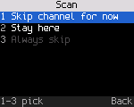
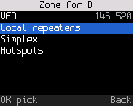
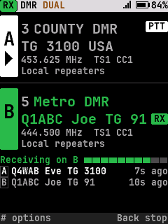
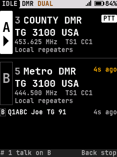
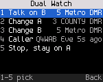

扫描与双守候
哪些电台的扫描和双守候已验证，见电台参考。
启动与停止
| 启动 | 停止 |
|---|---|
| OK、6（工具）、1（扫描） | 在主屏幕按 返回 |
| 设为扫描的侧键（设置 > 按键） | 再按同一个键 |
在信道上，电台扫描当前区域（“正在扫描本区域”）。在 VFO 中，它扫过 VFO 频率所在的频段（“正在扫描频段”）。状态行显示 SCAN，信道名随扫描移动而改变。
扫描至少需要另一个可切换的信道。热点模式中或你发射时不会运行。
双守候正在运行时，启动扫描会停止它。电台停留在选中的信道上，并从那里开始扫描。
扫描如何移动
- 扫描从起始信道开始，按顺序访问区域中的信道。它会跳过空位置和电台频率中标记跳过的信道。FM 和 DMR 信道可以混合。
- 在每个信道上收听 150 ms。FM 信道在静噪打开时停止扫描（若需要亚音，则按其亚音）。DMR 信道在电台播放呼叫时停止。
- 有信号时扫描会停留。信号结束 2 秒后继续，若信号回来则保持。
- 按住监听会暂停扫描。
扫描期间
| 按键 | 作用 |
|---|---|
| PTT | 停在最后使扫描停留的信道上并在那里通话。扫描仍在搜索时，它回到起始信道并在那里通话 |
| # | 打开使扫描停止的信道的扫描操作 |
| 返回 | 停止扫描 |
| 自行切换信道、区域或 VFO | 在你切到的位置结束扫描 |

扫描操作：
| # | 操作 | 作用 |
|---|---|---|
| 1 | 临时跳过信道 | 跳过该信道直到扫描停止（“已跳过，直到扫描停止”） |
| 2 | 留在此处 | 在此信道上停止扫描 |
| 3 | 始终跳过 | 尚未构建。请在 qdmr 中编辑扫描列表 |
双守候
双守候收听两个信道 A 和 B，你在其中一个上通话。每个可以是任意区域的任意信道，或 VFO。它是两个频率，不是一个 DMR 频率的两个时隙。
- A 是你启动时所在的信道。B 是你添加的那个。第一次时，B 是区域中的下一个信道。
- 其中一个是选中的。PTT 在它上面通话。上、下、旋钮、快速设置、通话目标和菜单都作用于它，就像在普通主屏幕上一样，即使电台正在收听另一个信道。发射后双守候继续。
- 电台在两个信道间往返时，每个信道保留其临时更改（功率、静噪、亚音、通话目标等）。
- 电台只有一个接收机，因此在 A 和 B 之间交替。电台在另一个信道上时可能错过一个信道上的呼叫。有两个接收机的电台能同时听到两者并在各自信道上显示呼叫。目前没有电台具备该能力（电台参考）。
启动
- 转到你想作为 A 的信道。
- 按 *，然后 7（双守候快速磁贴）。第一次时，B 是 A 所在区域的下一个信道（单信道区域中：下一区域的第一个信道，或 VFO）。之后从上次的 B 开始。按两次即可。长按 A/B 键效果相同。
主屏幕上下显示两个信道（A 在上），状态条中显示“DUAL”。
如果你关机时双守候正在运行，开机时它会再次启动。电台也会在关机时保留上次的 B。它按信道编号重新找到 B：先在 A 的区域，然后在第一个包含它的区域。若该信道已从电台频率中消失，B 重新为下一个信道。
若你在选中 B 时停止双守候，电台停留在 B。下次启动仍守候相同的两个信道。
更改 B
选中 B（A/B 键，或 #、1），然后像在主屏幕上一样更改其信道：上、下、旋钮、数字、查找、区域或 VFO 键。A 同理。
或按 #、3（改 B）打开选择器。列表显示你所在区域的信道及其频率和模式。按信道编号、输入名称的一部分，或移到它并按 OK。当前所在信道会变暗并标记“A”：它不能作为 B。

要选其他区域的信道或 VFO，请上移到区域行并按 OK。列表先显示 VFO，然后是各区域。选择区域查看其信道，或选 VFO 守候一个 VFO 频率。

读主屏幕

每个信道有字母、名称、PTT 的通话对象（通话组，FM 上为频率）、频率和所属区域。选中的信道在其字母下方有箭头。
| 你看到 | 含义 |
|---|---|
| PTT、实心字母和箭头 | 这是选中的信道：PTT 在此通话 |
| TX（红色）和“在 A 通话” | 你正在 A 上发射 |
| RX（绿色）和“在 B 接收” | B 上有来电。该信道显示呼叫者，行右侧为 RX |
| “B Joe Smith TG 91 10 秒前” | 最近的呼叫，最新的在前，并带其信道 |
| “7 秒前听到”（在信道上） | 该信道上一次呼叫结束的时间，位置合适时显示：最新呼叫为琥珀色，另一信道为暗色 |
| 忙（绿色，在信道上） | 电台正在等待另一信道的回复，并在此处发现了信号。尚未播放：等待结束后电台会转过去 |
| “# 1 在 B 通话” | 最近 10 秒内 B 上有来电。#、1 在那里回话 |
| “# 1 回到 A” | 回话已开启，且 PTT 在 B 上（见下文） |
默认情况下，另一信道上的呼叫绝不会移动 PTT。由你选择。
呼叫后的等待
电台只有一个接收机，因此在 A 和 B 之间切换。呼叫结束后，它在该信道上停留 1 秒，以便听到回复。等待期间，它会短暂查看另一信道。那里的呼叫显示为忙但不打断：等待结束后电台会转过去。用设置 > 通话 > 双守候延时更改等待时间（0.5 秒到 5 秒）。更短能更早发现另一信道；更长能保留更多迟到的回复。
回话
开启设置 > 通话 > 双守候回话（默认关闭）后，PTT 会跟随呼叫。另一信道上的呼叫结束时，该信道成为选中信道（“在 B 回话”），因此 PTT 在那里应答。每次回复和该处的每次呼叫都会重新开始 10 秒计时。计时结束后，选择切回（“在 A 通话”）。#、1、A/B 键或 左 / 右 会立即切回。开启时提示行显示“# 1 回到 A 返回 停止”。

在 B 通话
按 #、1（“在 B 通话”）。B 现在是选中信道。有左/右键对的电台上，右 选 B、左 选 A。按 A/B 键切换，设为 A/B 的侧键也一样（设置 > 按键）。双守候关闭时，A/B 键只提示“请先开启双守候”。按住 PTT 通话。松开后守候继续。

更改 A 或 B
在主屏幕按 #。操作为：
| # | 操作 | 作用 |
|---|---|---|
| 1 | 在 B（或 A）通话 | 选中另一信道 |
| 2 | 改 A | 打开 A 的选择器 |
| 3 | 改 B | 打开 B 的选择器 |
| 4 | 呼叫者 | 最近呼叫者的操作（听到呼叫前为暗色） |
| 5 | 停止，留在 A（或 B） | 在选中信道上结束双守候 |

一个信道不能同时是 A 和 B。更改 A 或 B 会清除为其列出的呼叫。
上 / 下 和旋钮让选中信道在其区域中移动，跳过另一信道。在 VFO 上它们步进频率。区域中没有其他信道可去时，电台会说明（“本区域仅一个信道”）。
在查找、信道或区域中选择的信道会成为选中信道；选择另一信道则选中它。VFO 键把选中信道放到 VFO 上，再按一次回到其信道。复制到 VFO 会把选中信道复制到 VFO。A 和 B 各有自己的 VFO，因此两者都可以是不同频率的 VFO；电台会记住两者。热点模式和写入电台频率不会停止双守候。
区域键（上一区域 和 下一区域）把选中信道移到上一或下一区域中不是另一信道的第一个信道上（“A 区域：Simplex”）。双守候继续。主区域 键把它移到第一个区域。若 上 / 下 设为区域（设置 > 按键），它们作用相同，旋钮仍步进信道。
停止
在主屏幕连按两次 返回。第一次提示“再按返回停止双守候”，因此误按不会停止。若你输入了频率或临时更改了设置，返回 会先清除这些。电台停留在选中信道上（“双守候关闭：在 B”）。以下也会停止它：*、7；长按 A/B 键；#、5；以及设为双守候的侧键。启动扫描（OK、6、1，或扫描键）会停止它并停留在选中信道上。其他操作都不会停止它。若电台无法继续使用某个信道（例如已被删除），主屏幕会说明电台所在位置：“双守候关闭：在 COUNTY DMR”。
按键
| 按键 | 作用 |
|---|---|
| PTT | 在选中信道上通话 |
| # | 双守候操作 |
| * | 选中信道的快速设置 |
| 上 / 下、旋钮 | 选中信道在其区域中移动（VFO：步进） |
| A/B 键（短按，或设置 > 按键）、左 / 右 | 另一信道 / A / B。双守候关闭时，A/B 键提示“请先开启双守候” |
| 上一区域、下一区域、主区域 | 选中信道转到其他区域 |
| 监听（按住） | 在选中信道上打开静噪。双守候在此等待，直到你松开 |
| 双守候键（设置 > 按键）、长按 A/B 键 | 启动（使用上次的 B）和停止 |
| VFO | 选中信道到 VFO，以及返回 |
| 返回，两次 | 停止，停留在选中信道上 |
启动双守候会停止区域扫描。开启大字体（设置 > 显示）时，主屏幕每个信道显示一行，选中项带箭头标记。
电台核心也可以扫描由两个频率设定的 VFO 范围。尚无对应菜单项。